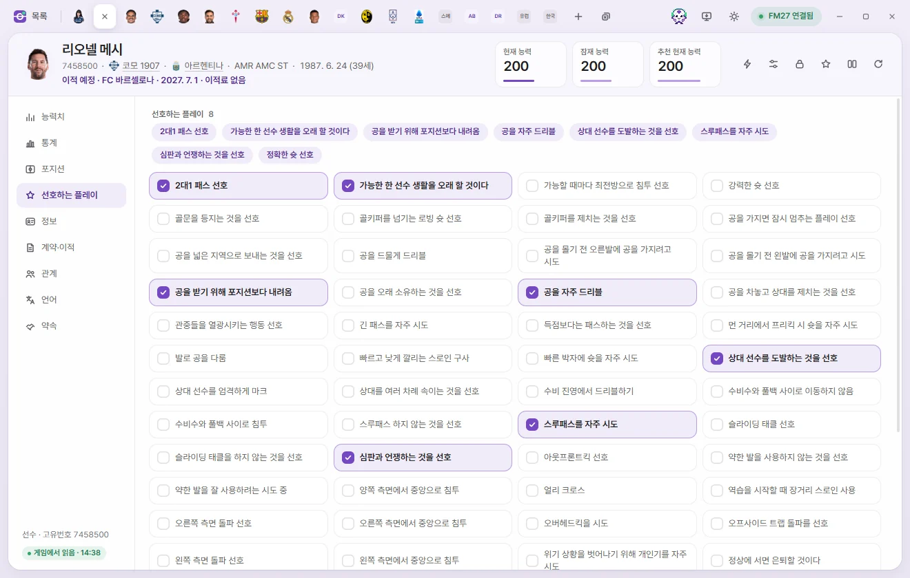
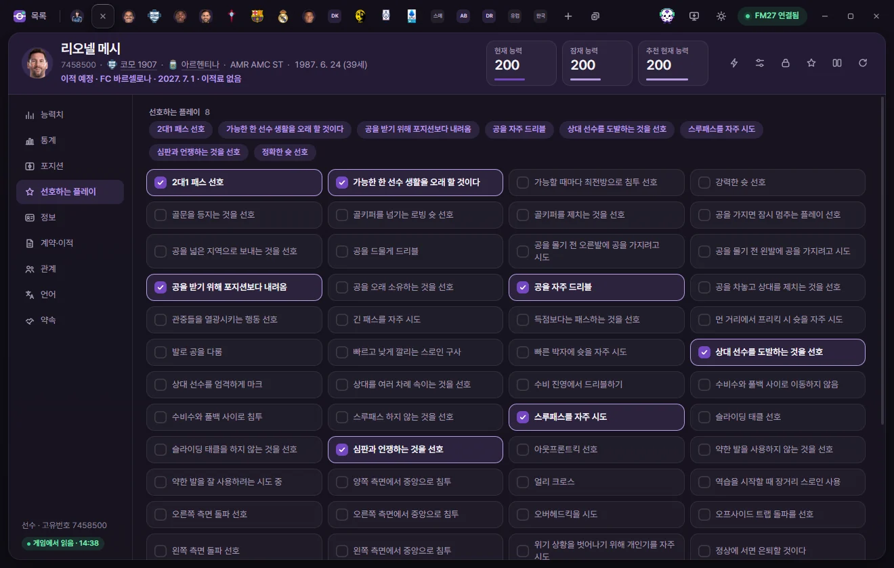
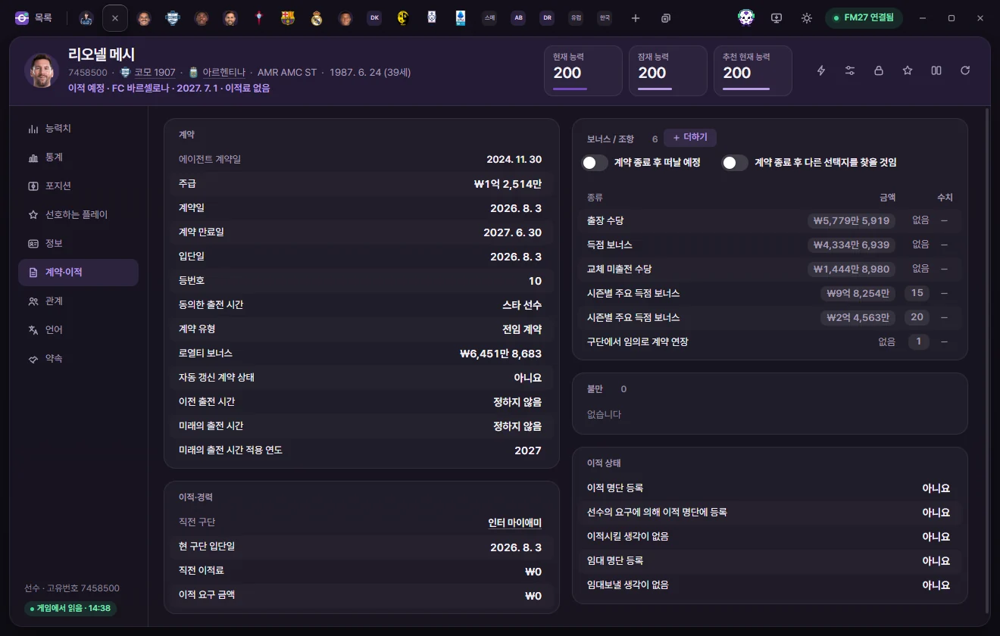

Edit tabs
Player
How to edit attributes, positions, player traits, contracts, relationships, and languages in a player tab, plus how editing and saving values works across all edit tabs.

Opening a tab
Click a player's name in the player list to open their tab. You can also open one from Quick Open (Ctrl+K), any underlined player name in another tab, or the squad table in a club tab. See Tabs and Quick Open for more on working with tabs.
Opening a tab reads the player's values from the game once. While loading, you'll see 'Reading from game'. If the read fails, 'Could not read values' appears with a 'Reload' button.
Tab header
Every edit tab shares the same header layout. Only the number cards and the line of details beneath the name change for each type of tab.
Name and subtitle
- Unique ID: The first item under the name. Click it to copy the ID. People generated by the game (newgens) appear as
r-ID(the format graphics packs use). - Next for a player are their Club, nationality, and Primary position. Click any underlined name to open that club or nation in a tab.
- Players out on loan also show 'Loan · Contracted club'.
- Date of birth and age (based on the current in-game date) appear next.
- Players with an agreed future transfer show 'Future transfer · Club · Date · Transfer fee', and players with a retirement date show 'Set to retire · Date'.
FMAX picks Primary position from Position familiarity, showing up to three positions within 2 points of the player's highest value.
Number cards
Players have three cards: Current ability (CA), Potential ability (PA), and Recommended Current Ability (RCA).
- Click the Current ability or Potential ability card to type a number directly. Press Enter or click elsewhere to keep it, or press Esc to restore the original value. Like any other field, you still need to click Save to write it to the game.
- Recommended Current Ability is calculated from the player's attributes and positions the exact same way the game calculates it. It cannot be edited directly. Whenever it differs from Current ability, a Set CA to this button appears on the card—click it to stage that value as the new Current ability (still requires saving).
- Turning on 'Show attribute effectiveness on player screen (experimental)' in Settings adds an Attribute effectiveness card. Hover over it to see per-position ratings. This card is read-only.
- Turning on 'Hide CA & PA' in Settings masks these cards with dots (••).
Header buttons
| Button | What it does |
|---|---|
| ⚡ In-game editor actions | Opens a menu for transfers & loans, injuries, bans & unhappiness, homegrown status, nationality, national team & military service, retirement date, and more. Chosen actions take effect in the game right after confirmation. See Game editor (⚡) for every item |
| Presets | Fills this tab with values from a chosen preset. Filled values still need Save to take effect. At the bottom of the menu you'll also find 'Create preset from current values' and 'Manage presets'. Presets |
| Locks | Locks the fields chosen under 'Values to lock with the Locks button' on the Locks screen to their current in-game values. Click again to unlock them. If no fields are selected yet, a prompt guides you to the Locks screen. Locks |
| Favourites (star) | Adds or removes this player from your favourites. Favourited items can be opened straight from Favourites on the left of the list screen |
| Compare | Views values side by side with another tab of the same type. Compare |
| Reload from game | Reads this player's values fresh from the game. Unsaved edits stay staged unless the game already has that exact value, in which case the staged edit is cleared |
Left sidebar
Down the left are the subpages—click one or move between them with ↑ and ↓. At the very bottom you'll see 'Player · ID' and the read status.
- Read from game · time: Values read from the game at that timestamp.
- Last read values: FMAX lost connection to the game or a save was reloaded, so the values on screen may no longer match the live game. Editing is disabled in this state—click Reload to refresh.
Editing values
Values work the same way across every edit tab.

- Each row is one field. Dimmed rows are read-only.
- Click a row (or press Enter) to open its editor.
- Numbers: adjust with the − / + buttons, direct typing, ↑ ↓, or the mouse wheel. Hold Shift while clicking −/+ to step by 5 on 1-point fields like attributes, or by 10× on large numbers. Money fields step in clean round units of your chosen currency.
- Dates open a calendar, choice fields open a dropdown list, and colours open a colour picker.
- Yes/No fields open as a number input: 1 is Yes and 0 is No.
- Press Enter or click elsewhere to keep the value, or press Esc to put back what was there when you opened the row. Tab moves straight to the next row.
- Edited rows change colour and show the original value in small text alongside the new one. Setting a field back to its original value clears the pending edit.
- Hover over ⓘ next to a row's name to read a tooltip explaining that field.
- The padlock on each row locks that single value, pinning it to its current in-game number the moment you click it. Locks
- Money fields are shown and entered in the currency chosen in Settings. Wages (the Wage field) appear per week, per month, or per year depending on 'Wage display' in Settings.
- Inside the game, attributes are stored more finely than the whole numbers on screen, so an 'internal value' appears alongside the input while editing. Returning the visible number to what it was keeps the original fine-grained value intact.
- Turning on 'Allow values above normal range (experimental)' in Settings lets you enter up to 25 for attributes and up to 127 for personality values. Values past the normal range are marked.
In list sections (languages, relationships, contract clauses, and so on), click any number with a dotted underline to edit it in place. + Add in a list header and − (remove) at the end of a row also wait until you click Save. Click a row marked for removal a second time to cancel removing it.
Saving and reverting
As soon as you change a value, a bar appears at the bottom showing the count of changed fields and a preview of the first two as 'Field old→new'.
- Save: Writes only this tab's changes to the game. Before writing, FMAX checks that the game still holds the values from when the tab was read, and reads them back afterwards to confirm they match. Saved values flash green once.
- Revert: Discards all unsaved edits in this tab and restores the game's values.
- To write pending changes across multiple tabs at once, click Save (Ctrl+S) at the top of the window.
- If the game's values changed in the meantime, FMAX skips writing and reloads instead, keeping your pending edits staged.
- When FMAX is disconnected from the game—or showing values read from an earlier session—the Save button changes to 'Apply once connected' and cannot be clicked.
- Closing a tab with unsaved changes discards them, though clicking 'Reopen' in the toast that pops up brings back both the tab and your staged edits.
- Adding or removing records in the game—such as names, nationalities, languages, individual injuries, homegrown status, Competition Registration, contract clauses, or Bans—calls the game's own internal functions. FMAX asks whether you have backed up your save for the first time. Save while the game is paused on a regular screen, not while dates are advancing.
For full details on when changes reach the live game versus your save file, see When changes reach the game.
Attributes
Technical, Mental, Physical, and Set pieces attributes sit on one page, with Hidden attributes, Preferred foot, Personality, Reputation, fitness, and injuries underneath. The number beside each group heading is the average for that group. Attributes are listed alphabetically.
Toggle Show goalkeeper attributes at the top right to swap the Technical group for the Goalkeeper group (with First Touch and Passing included). It starts turned on automatically for players with GK familiarity of 15 or higher.
| Group | Fields | Range |
|---|---|---|
| Technical | Crossing, Dribbling, Finishing, First Touch, Heading, Marking, Passing, Shots from Distance, Tackling, Technique | 1–20 |
| Mental | Aggression, Anticipation, Bravery, Composure, Concentration, Decisions, Determination, Flair, Leadership, Off the Ball, Positioning, Teamwork, Vision, Work Rate | 1–20 |
| Physical | Acceleration, Agility, Balance, Jumping Reach, Natural Fitness, Pace, Stamina, Strength | 1–20 |
| Set pieces | Corners, Free Kick Taking, Long Throws, Penalties | 1–20 |
| Goalkeeper | Aerial Reach, Command of Area, Communication, Eccentricity, Handling, Kicking, One on Ones, Punching (Tendency), Reflexes, Rushing Out (Tendency), Throwing | 1–20 |
| Hidden attributes | Consistency, Dirtiness, Important Matches, Injury Proneness, Versatility | 1–20 |
| Preferred foot | Left Foot, Right Foot | 1–20 |
| Personality | Adaptability, Ambition, Controversy, Loyalty, Pressure, Professionalism, Sportsmanship, Temperament | 1–20 |
| Reputation | Current reputation, Home reputation, World reputation | 0–10000 |
Fitness & morale
| Field | What it does | Range |
|---|---|---|
| Condition | Physical condition | 50–100% |
| Match sharpness | Match sharpness | 30–100% |
| Fatigue | Higher values mean a more jaded player | −500–1000 |
| Morale | Player morale | 1–20 |
| Happiness | Happiness stored in the contract. Observed values ranged from −40 to 86; the full range the game accepts has not been verified | −100–100 |
| Playing Time Happiness | Every value seen in tested saves was 20 (likely because they were at the start of the season) | −100–100 |
Injuries & bans
- Current injuries: Shows the injury, date injured, and days out (max & min). Heal injuries in the header clears the whole list. Heal at the end of a row has the game clear just that single injury. Both take effect when you click Save; click again to cancel.
- Bans: Shows the type, Range, start date, and length (remaining matches or days).
- Clear bans: Empties the entire list.
- + Add: Pick a ban type to open a dialog. Depending on the type, choose the Range (competition, nation, continent, or National team type), pick a start date (within 2 years before or after today), and set either matches (1–127) or days (1–730).
- The pencil button edits all fields of an existing ban. − removes it.
Stats
This page shows This season’s stats and compares the player with others. Everything here is read-only. Switch between Season details, League rankings, and Overview at the top, and filter the comparison using competition, Compare leagues, position, and Min. minutes. The player card (with photo and Save as PNG) also lives under Overview. For full details, see Stats, player cards, and Record room.
Positions

The pitch diagram shows all 15 positions with their ratings, colour-coded for Primary position (18+), accomplished (13+), and competent (10+). Click a circle on the pitch or edit the table on the right. 20 is the highest familiarity.
| Field | What it does | Range |
|---|---|---|
| GK, SW, DL, DC, DR, WBL, WBR, DM, ML, MC, MR, AML, AMC, AMR, ST | Position familiarity | 1–20 |
| Preferred side | Which side the player prefers when sharing a position with teammates. Includes None, Right, Left, Centre, and numbered values such as 'Right (3)'. For codes 3, 4, 6, and 7, only whether they mean right or left has been verified | Options |
Player traits



All 62 Player traits are listed alphabetically as toggles, with currently active traits and their count shown at the top. Click any switch to toggle it on or off, then click Save to apply. 'Will Retire At Top' and 'Will Play Football For As Long As Possible' are here too.
Info

Overview
| Field | What it does | Editable range |
|---|---|---|
| Unique ID, Regens, Has work permit | Unique ID, whether the game generated the player, and whether they hold a work permit | Read-only |
| Name, Surname, Common name | Click to edit the text. Name and Surname cannot be blank; Common name can be cleared | Up to 60 characters |
| Nationality | Click the pencil button to pick a country. Clicking Save changes primary nationality using the game's own function. Other nationalities and international records stay as they are | Country list |
| Club, Contracted club | Where the player currently plays and the club holding their contract. Click either to open its club tab | Read-only |
| City of birth | Click the pencil button to pick a city. Clicking Save changes it using the game's own function | City list |
| Gender | Male or Female. Switching to Female adds the 'Men’s team eligibility' row. See Changing gender for details | Male, Female |
| Set to retire | Retires at the end of this season. Whether turning this off postpones retirement in the game has not yet been verified | Yes, No |
| Retiring after spell at current club | Retires upon leaving their current club | Yes, No |
| Date of birth | Changing this updates the player's age as well | Date |
| Height | cm | 140–215 |
Nationalities and homegrown lists
- Other nationalities: Click + Add to pick a country to add, or − to remove one. Countries already on the list and the player's primary nationality cannot be chosen.
- Trained at club (homegrown), Trained in nation (homegrown): Match 'Trained at club' and 'Trained in nation' in the Game editor. Click + Add, choose a rule (for example, 3 years, ages 15–21), and then pick the club or nation. Click the rule column to change the rule, or − to remove the row. Rules like 8 and 12, which cannot be picked in the Game editor, appear only on records generated by the game itself.
- Competition Registration: Shows which team and competitions the player is registered for (team, team type, Registration type). Click + Add, choose the current team or contracted team, and pick a Registration type. Click − to remove an entry. National Team registrations are read-only. As generally understood, Domestic registration does not cover Continental competitions.
Appearance
| Field | What it does | Editable range |
|---|---|---|
| Language ID | 255 means none | Read-only |
| Ethnicity | 11 options including Northern European, Mediterranean/Hispanic, Asian, East Asian, and others | Options |
| Hair colour | Blonde, Light brown, Dark brown, Red, Black, Grey (1–3 each), plus Unknown | Options |
| Hair length | Very short, Short, Medium, Long, Bald | Options |
| Skin tone | May appear 1 higher in other editing tools | 0–20 |
| Body Type | Ectomorph, Ecto-Mesomorph, Mesomorph, Meso-Endomorph, Endomorph | Options |
The Match appearance fields below Appearance (Hairstyle, Sleeves, Shirt tuck, Boots, and more) are covered in Match appearance.
National team
| Field | What it does | Editable range |
|---|---|---|
| International Caps, International Goals | Senior national team record | 0–999 |
| U21 International Caps, U21 International Goals | Under-21 national team record | 0–255 |
| Nationality Info | Status tied to primary nationality (Declared For Nation, Born In Nation, Not Eligible For Nation, etc.). Most players show 'No information' | Options |
| Treated as Non-EU in Italy | Matches the field of the same name in the Game editor. Setting it to 'No' clears both underlying flags so the player counts as an EU player in Italy. The game may reassign this on a transfer or squad reclassification | Options |
| International Debut, First International Goal | Dates | Date |
| International Retirement Date | Date the player retired from international football. A date in the future means they plan to retire on that day. FMAX cannot yet add or remove the 'Retired from internationals' record itself (available in the ⚡ menu) | Date |
Ability
Current ability and Potential ability (1–200 each)—the exact same values shown on the header cards.
Contract & transfer


Contract
| Field | What it does | Editable range |
|---|---|---|
| Wage | Displayed per week, month, or year depending on Settings | £0 to £100 million |
| Contract signed, Contract expiry, Date joined | Contract dates | Date |
| Squad Number | 255 means none | 1–99 |
| Agreed Playing Time | Squad status agreed in the contract (Star Player, Regular Starter, Youngster, etc.). A duplicate value exists elsewhere inside the contract, though FMAX edits only this field | Options |
| Contract Type | Part-Time, Full-Time, Amateur, Youth, Non-Contract | Options |
| Loyalty Bonus | Uses the same unit as Wage | £0 to £100 million |
| Rolling Contract | Whether the contract renews automatically. None of the players in tested saves had this turned on | Yes, No |
| Previous Playing Time | Previous squad status | Options |
| Future Playing Time, Future Playing Time Year | Squad status set to take effect from that year onward, mostly found on young prospects. Year 1900 means none | Options, 1900–2200 |
| Agent contract date | Date the player signed with their agent | Read-only |
The Bonuses / Clauses list shows type, amount, and value. The two switches underneath the header and + Add appear only for players who have a contract.
- Click an amount or value to edit it. Amounts use the same unit as Wage; values represent percentages (%) or match counts.
- For clauses that expire on a date—such as a Minimum Fee Release Clause—the value is the number of days from Contract signed, shown on screen like '365 days (until date)'.
- The two switches beneath the header, Will leave at end of contract and Will explore options at end of contract, match the switches of the same name in the Game editor.
- + Add: Pick a clause type to open a dialog for setting the amount and value (or 'Expiry date' for dated clauses). Toggle either field off to add the clause without that parameter. You can add multiple clauses of the same type.
- Click − to remove a clause.
Unhappiness
Lists the player's unhappiness records (reason, stage, Start date, end date). Up to the 10 most recent entries are kept, including resolved ones. Clicking End on an ongoing entry sets its end date to today's in-game date when you save (the same way 'Remove unhappiness' works). Click again to cancel.
Transfer status
| Field | Range |
|---|---|
| Transfer listed | Yes, No |
| Transfer listed by request | Yes, No |
| Not for sale | Yes, No |
| Listed for loan | Yes, No |
| Unavailable for loan | Yes, No |
Transfers & career
| Field | What it does | Editable range |
|---|---|---|
| Date Joined Club | Date the player joined their current club | Date |
| Previous Club | Click to open that club's tab | Read-only |
| Previous Transfer Fee | −1 means none | £0 to £1 billion |
| Asking Price | −1 means none | £0 to £1 billion |
Transfers, loans, and Terminate contract are handled from the ⚡ menu. Game editor (⚡)
Relationships

Shows relationship records with other people, clubs, competitions, and nations by type, target, and details—ordered from international retirement and rivals to favoured/disliked entries and other records. Click any target's name to open its tab.
Favoured Personnel, Disliked People, Favoured Clubs, Disliked Clubs can be edited.
- Type button: switches between favoured and disliked.
- Reason button: picks the reason (friend, idol, teammate, etc. for people; supporter, player, etc. for clubs).
- Strength: click to enter 0–100. Higher numbers mean a stronger relationship.
- Permanent: toggleable for people only. Permanent relationships do not fade over time. Club relationships are always permanent.
- −: removes that record.
- + Add: pick a relationship type, then search for and select a player, staff member, or club. New entries start at strength 75 and permanent. Self and targets that already have a relationship with this player cannot be selected.
Other records (nationality, Competition Registration, Youth Club, Games Played, and so on) are read-only. 'Other' marks record types whose purpose is unknown. 'Military Service' is named that way because nearly everyone carrying this record is a South Korean player.
Languages
Lists Spoken languages (language and fluency level). A player's native tongue comes from their nationality and is not listed here. Levels run from 0 to 10, where higher means more fluent.
- Click a level to change the number.
- Cannot speak: Matches 'Cannot speak' in the Game editor. Languages marked Cannot speak show a Set level button so you can assign a fluency level again.
- + Add: Choose a level (10–1) or Cannot speak, then pick the language.
- Click − to remove a language.
Promises
Lists promises made to the player by a manager and their outcomes (promise, Promised by, Made on, due date, outcome). The game also uses this same internal list to log trait training, intensive language courses, and bonus reactions—those rows are prefixed with (Training), (Language), or (Record). Completed trait training is recorded by the game using the same internal value as 'Broken'.
This page is read-only. Because due dates also govern the order of the game's global promises list, we have not yet verified whether editing them is safe.